7 Step-by-step shiny
You can run shiny on Linux or on the Rstudio web page.
7.1 Option 1: Run shiny on Linux
- Enter Linux, activate the HemaScope environment, then you can enter the R environment on Linux and run shiny code.
- You can see “>” . It means that you have accessed the R environment on Linux.
library(HemaScopeR)
app_path <- system.file("shinyapp/shiny_sc_st_all.R", package = "HemaScopeR") #The path where shiny_sc_st_all.R is located
#Run shiny code
shiny::runApp(app_path,launch.browser = FALSE,host = "127.0.0.1",port=18888) #host parameter：Your server IP addressYou’ll see a page like the one below,copy link
Open the link with a browser,you can see HemaScopeR shiny home page. 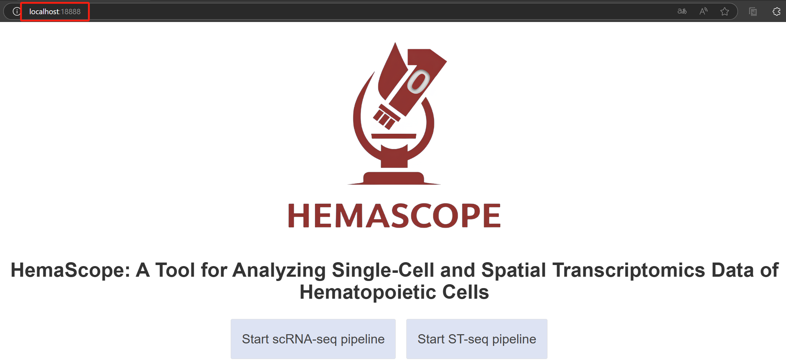
7.2 Option 2: Run shiny on Rstudio web page
7.2.1 Step 1. Enter R and get the path of the installed R packages
- Enter the R environment in the Linux command line.
R- Get the path of the installed R packages in the R command line.
For example, “/An/example/of/the/path/to/installed/R/packages”
7.2.2 Step 2. Run shiny code
.libPaths("/An/example/of/the/path/to/installed/R/packages")
app_path <- system.file("shinyapp/shiny_sc_st_all.R", package = "HemaScopeR") #The path where shiny_sc_st_all.R is located
#Run shiny code
shiny::runApp(app_path,launch.browser = FALSE,host = "127.0.0.1",port=18888) #host parameter：Your server IP address7.2.3 Step 3. Use HemaScopeShiny via the GUI
- Start interface.
A UI page appears with two buttons: “Start scRNA-seq Analysis” and “Start st-seq Analysis.” Users can click the corresponding button based on their needs to enter the respective analysis page. * The figure showing the start interface.
- Begin a new analysis, continue the previous analysis, or return to the start interface
When clicking the “Start scRNA-seq pipeline” or “Start ST-seq pipeline” button, you will be directed to a second page. This page contains three buttons: “Begin New Analysis,” “Continue Previous Analysis”, and “Back to Home”.
If you need to begin a new analysis of scRNA-seq or st-seq data from the first step, click “Begin New Analysis”. If you have already used Shiny to complete several steps (e.g., steps 1, 2, and 3), but the analysis was interrupted during step 4 due to some unexpectedly closing, click “Continue Previous Analysis” to resume from step 4.
Please note: users should follow the analysis steps sequentially and not skip steps. For example, analyzing steps 1, 2, and 3 and then jumping directly to step 6 is incorrect. The proper analysis sequence should be step 1, 2, 3, 4, 5, 6, … N.
- The figure showing the interface for beginning a new analysis, continuing the previous analysis, or returning to the start interface. 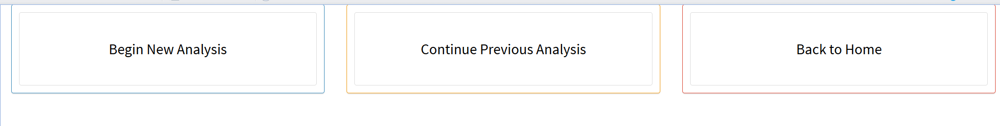
7.2.3.1 scRNA-seq pipeline
When the user clicks the “Start scRNA-seq pipeline – Begin New Analysis” button, they will enter the single-cell analysis page. The sidebar of this page includes the following buttons: Step 1. Input Data Step 2. Quality Control Step 3. Clustering Step 4. Identify Cell Types Step 5. Visualization Step 6. Find Differential Genes Step 7. Assign Cell Cycles Step 8. Calculate Heterogeneity Step 9. Violin Plot for Marker Genes Step 10. Calculate Lineage Scores Step 11. GSVA Step 12. Construct Trajectories Step 13. Transcription Factors Analysis Step 14. Cell-Cell Interaction Step 15. Generate the Report Back to Prior Page
- The figure showing the scRNA-seq pipeline. 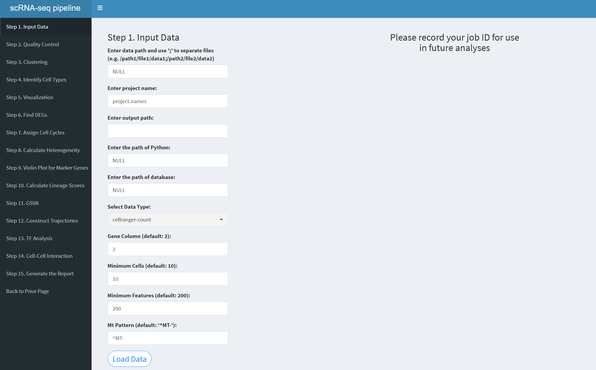 Please start the analysis from step 1 and do not skip any steps. The correct analysis sequence is steps 1 through 15: 1, 2, 3, 4, 5, 6, 7, 8, 9, 10, 11, 12, 13, 14, 15.
To return to the previous page, click “Back to Prior Page”.
If Shiny unexpectedly exits during data analysis in the Begin New Analysis process (for example, while analyzing Step 5), and the analysis of Step 5 is interrupted, the user will need to restart ShinyApp(ui, server). This will bring up the Home page. The user should click the “Start scRNA-seq pipeline–Continue Previous Analysis” button, enter the Job ID displayed on the UI page during the Step 1.Input data step, and then select the step that did not complete successfully (e.g., Step 5). After entering the necessary parameters for Step 5, click “Run Step 5” to resume the analysis. Once Step 5 is completed, the user should proceed by selecting Step 6, entering the required parameters, and clicking “Run Step 6” to analyze Step 6, and so on, until all scRNA-seq steps are completed. Note that the default parameters for each step are the same as those in Begin New Analysis. After clicking “Run Step,” do not perform any other operations on the parameter page. Wait until the current step’s analysis is complete, and the results for that step will appear on the UI page.
The “Start scRNA-seq pipeline–Continue Previous Analysis” page contains the following buttons:
Back to Prior Page: Click to return to the previous page. Enter your Job ID: Enter the Job ID displayed on the page during the Begin New Analysis–Step1.Input data step. Choose a step you want to analyze: Select the step you want to continue analyzing.
7.2.3.1.1 Step 1 (scRNA-seq pipeline). Input Data
- The figure showing the step 1 of scRNA-seq pipeline.
Enter data path: Input multiple file paths separated by semicolons, for example: /path1/file1/data1;/path2/file2/data2;/path2/file2/data3. For a single file, use: /path2/file2/data2.
Enter project name: When entering multiple files, you must also input multiple project names, separated by semicolons. The number of project names must match the number of input files. Example: projectname1;projectname2;projectname3. For a single file, use: projectname1.
Enter output path: Specify the path where the results will be output. You can view the results of each step in this path. Example: /home/username/output.
Enter the path of database: The path where the database is stored and it varies for each user. Example: /home/username/database.
Select Data Type: There are three options: “cellranger-count”, “Seurat”, “Matrix”. Choose according to the type of input data.
Gene Column (default: 2): The column where gene names are located; the default is column 2.
Minimum Cells (default: 10): The minimum number of cells for filtering; the default is 10.
Minimum Features (default: 200): The minimum number of genes that must be detected in each cell; the default is 200.
Mt Pattern (default: ‘^MT-’): Mitochondrial pattern; for humans use ^MT-, for mice use ^mt-.
After entering the above parameters, click the “LoadData” button to load the data. Once the data is successfully loaded, you will see “OK! Data dimensions” indicating that the data loading is complete, and you will be provided with a JobID. Make sure to note this JobID, as it is crucial. If HemaScopeShiny unexpectedly exits, you can click “Continue Previous Analysis”, enter the JobID, and continue loading the previous analysis results without starting from step 1 again. The JobID is very important!
Please note: After clicking the “LoadData” button, do not modify any other parameters on the page.
The Step 2-14 pages will consist of three sections: 1) parameter input, 2) result output file names, and 3) generated result figures.
If the respective step produces result figures, they will be displayed. Users can switch between images by clicking the arrows on the left or right of the figure. If no figures are generated for the current step, a message stating “NO Figure!” will be displayed.
All output files generated at each step are stored in the output directory specified by the user. The UI page will display only the file names, which can be downloaded by clicking on the file name links.
7.2.3.1.2 Step 2 (scRNA-seq pipeline). Quality Control
- The figure showing the step 2 of scRNA-seq pipeline. 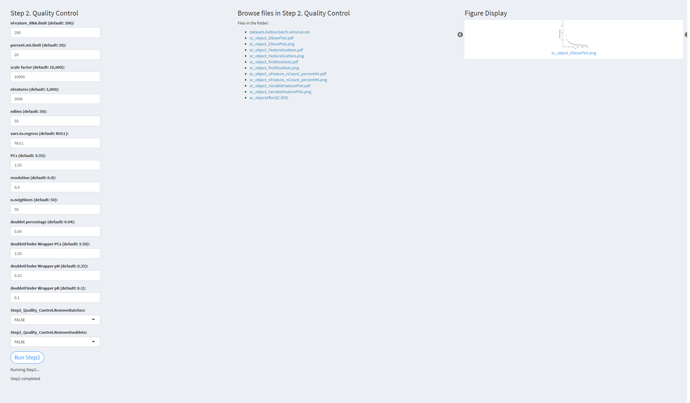
nFeature_RNA.limit: Minimum number of genes detected per cell. Default value: 200 percent.mt.limit: Threshold for filtering mitochondrial genes. Default value: 20 scale.factor: Normalization factor. Default value: 10,000 nfeatures: Number of highly variable genes. Default value: 3,000 ndims: Number of dimensions used. Default value: 50 vars.to.regress: Variables to regress. Default value: NULL PCs: Number of principal components used for clustering. Default value: 1:35 resolution: Resolution parameter for clustering. Default value: 0.4 n.neighbors: k.param parameter in the FindNeighbors function. Default value: 50 doublet.percentage: Doublet rate. Default value: 0.04 doubletFinderWrapper.PCs: Number of principal components used for doublet removal. Default value: 1:20 doubletFinderWrapper.pN: Number of artificial doublets defined for removal. Default value: 0.25 doubletFinderWrapper.pK: Represents the fraction of merged real artificial data. Default value: 0.1 (pK should be adjusted according to each scRNA-seq dataset) Step2_Quality_Control.RemoveBatches: Whether to remove detected batches. Default value: TRUE Step2_Quality_Control.RemoveDoublets: Whether to remove detected doublets. Default value: TRUE
Click the “Run Step 2” button to start the process. After clicking the “Run Step 2” button, please do not interact with other parameters or buttons on the page. Once the process is complete, a “Step 2 completed” message will appear.
After a short while, the result files generated by Step 2 will be displayed on the UI page. The result files are stored in the folder specified by the user’s output.dir parameter.
7.2.3.1.3 Step 3 (scRNA-seq pipeline). Clustering
- The figure showing the step 3 of scRNA-seq pipeline. 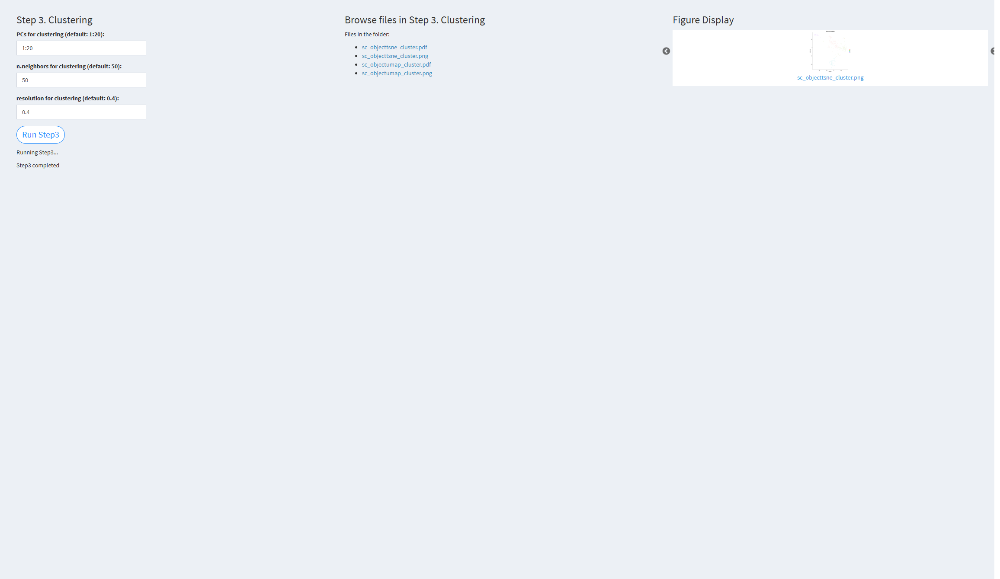
PCs for clustering (default: 1:20): Principal components used for clustering. Default value: 1:20 n.neighbors for clustering (default: 50): k.param parameter in the FindNeighbors function. Default value: 50 resolution for clustering (default: 0.4): Resolution used for clustering. Default value: 0.4
Click the “Run Step 3” button to start the process. After clicking the “Run Step 3” button, please do not interact with other parameters or buttons on the page. Once the process is complete, a “Step 3 completed” message will appear.
After a short while, the result files generated by Step 3 will be displayed on the UI page. The result files are stored in the folder specified by the user’s output.dir parameter.
7.2.3.1.4 Step 4 (scRNA-seq pipeline). Identify Cell Types
- The figure showing the step 4 of scRNA-seq pipeline. Choose organism: ‘hsa’ for human, ‘mmu’ for mouse Choose Labels: Cell labels, default value: clustering Run CNV: TRUE if copy number variation (CNV) analysis is to be performed CPU cores for parallel processing: Number of CPU cores for parallel processing, default value: 10
Click the “Run Step 4” button to start the process. After clicking the “Run Step 4” button, please do not interact with other parameters or buttons on the page. Once the process is complete, a “Step 4 completed” message will appear.
After a short while, the result files generated by Step 4 will be displayed on the UI page. The result files are stored in the folder specified by the user’s output.dir parameter.
7.2.3.1.5 Step 5 (scRNA-seq pipeline). Visualization
- The figure showing the step 5 of scRNA-seq pipeline.
Nearest neighbors for PhateR analysis (default: 50): phate.knn parameter, the number of nearest neighbors to consider in the PhateR algorithm. Default value: 50 Principal components for PhateR (default: 20): phate.npca parameter, the number of principal components to use in the PhateR algorithm. Default value: 20 t parameter for PhateR (default: 10): phate.t parameter, the t value for the PhateR algorithm. Default value: 10 Dimensions for PhateR (default: 2): phate.ndim parameter, the number of dimensions for embedding output in the PhateR algorithm. Default value: 2
Click the “Run Step 5” button to start the process. After clicking the “Run Step 5” button, please do not interact with other parameters or buttons on the page. Once the process is complete, a “Step 5 completed” message will appear.
After a short while, the result files generated by Step 5 will be displayed on the UI page. The result files are stored in the folder specified by the user’s output.dir parameter.
7.2.3.1.6 Step 6 (scRNA-seq pipeline). Find Differential Genes
- The figure showing the step 6 of scRNA-seq pipeline. 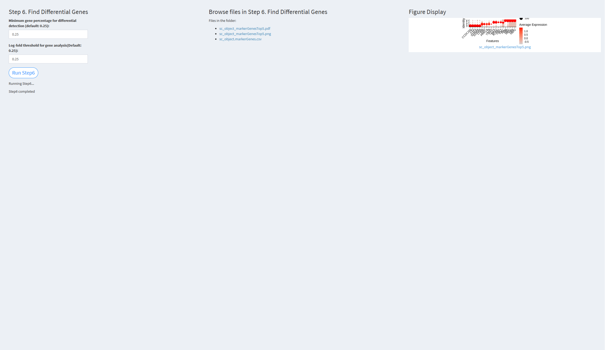 Minimum gene percentage for differential detection (default: 0.25): The minimum fraction of cells expressing a gene in any cluster. Default value: 0.25 Log-fold threshold for gene analysis (default: 0.25): The log-fold change threshold for differential gene expression analysis. Default value: 0.25
Click the “Run Step 6” button to start the process. After clicking the “Run Step 6” button, please do not interact with other parameters or buttons on the page. Once the process is complete, a “Step 6 completed” message will appear.
After a short while, the result files generated by Step 6 will be displayed on the UI page. The result files are stored in the folder specified by the user’s output.dir parameter.
7.2.3.1.7 Step 7 (scRNA-seq pipeline). Assign Cell Cycles
- The figure showing the step 7 of scRNA-seq pipeline. 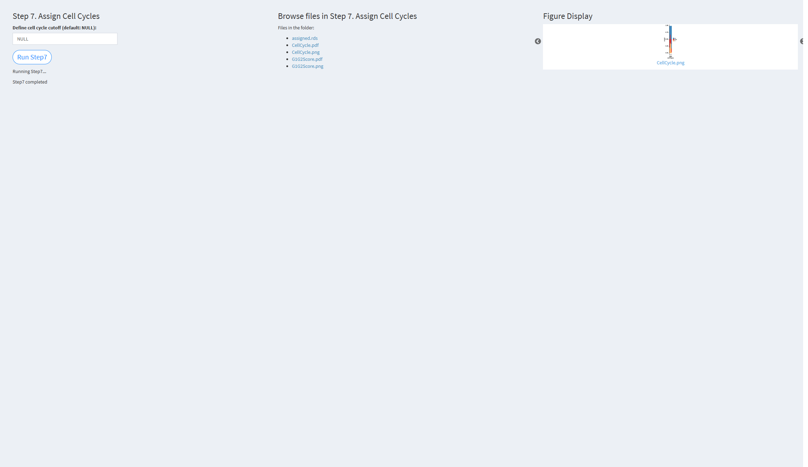 Define cell cycle cutoff (default: NULL): The cutoff value used to distinguish between cycling and non-cycling cells. Default value: NULL
Click the “Run Step 7” button to start the process. After clicking the “Run Step 7” button, please do not interact with other parameters or buttons on the page. Once the process is complete, a “Step 7 completed” message will appear.
After a short while, the result files generated by Step 7 will be displayed on the UI page. The result files are stored in the folder specified by the user’s output.dir parameter.
7.2.3.1.8 Step 8 (scRNA-seq pipeline). Calculate Heterogeneity
- The figure showing the step 8 of scRNA-seq pipeline. Order cell types: The order of cell types for visualization. If not provided, the function will use the unique cell types from the input cell_types_groups. Default value: NULL
Click the “Run Step 8” button to start the process. After clicking the “Run Step 8” button, please do not interact with other parameters or buttons on the page. Once the process is complete, a “Step 8 completed” message will appear.
After a short while, the result files generated by Step 8 will be displayed on the UI page. The result files are stored in the folder specified by the user’s output.dir parameter.
7.2.3.1.9 Step 9 (scRNA-seq pipeline). Violin Plot for Marker Genes
- The figure showing the step 9 of scRNA-seq pipeline. Enter marker genes for violin plot (separate by ‘,’): The marker genes for the violin plot. Default value is the built-in marker genes: NULL.
Set the hexadecimal codes of colors for cell types (separate by ‘,’): Specify the colors for cell types. The default is the color palette: NULL.
Click the “Run Step 9” button to start the process. After clicking the “Run Step 9” button, please do not interact with other parameters or buttons on the page. Once the process is complete, a “Step 9 completed” message will appear.
After a short while, the result files generated by Step 9 will be displayed on the UI page. The result files are stored in the folder specified by the user’s output.dir parameter.
7.2.3.1.10 Step 10 (scRNA-seq pipeline). Calculate Lineage Scores
- The figure showing the step 10 of scRNA-seq pipeline.
The gene sets for calculating lineage scores: The gene sets used for calculating lineage scores. The default is the color palette: NULL.
The names for the lineages: The names of the lineages. Default value: NULL.
The hexadecimal codes of colors for groups: Specify the colors to be used for different group annotations. The default is the color palette: NULL.
Click the “Run Step 10” button to start the process. After clicking the “Run Step 10” button, please do not interact with other parameters or buttons on the page. Once the process is complete, a “Step 10 completed” message will appear.
After a short while, the result files generated by Step 10 will be displayed on the UI page. The result files are stored in the folder specified by the user’s output.dir parameter.
7.2.3.1.11 Step 11 (scRNA-seq pipeline). GSVA
- The figure showing the step 11 of scRNA-seq pipeline.
Option to identify cell type-specific GSVA terms: Whether to identify cell type-specific GSVA terms. Default value: TRUE.
Option to identify differential GSVA terms: Whether to identify differential GSVA terms. Default value: TRUE.
Click the “Run Step 11” button to start the process. After clicking the “Run Step 11” button, please do not interact with other parameters or buttons on the page. Once the process is complete, a “Step 11 completed” message will appear.
After a short while, the result files generated by Step 11 will be displayed on the UI page. The result files are stored in the folder specified by the user’s output.dir parameter.
7.2.3.1.12 Step 12 (scRNA-seq pipeline). Construct Trajectories
- The figure showing the step 12 of scRNA-seq pipeline.

Set the cell types for constructing trajectories: The cell types to be used for trajectory analysis. Different cell types should be separated by commas. Default value: “all.”
Option to run monocle2: Whether to perform Monocle2 trajectory analysis. Default value: TRUE.
Option to run slingshot: Whether to perform Slingshot trajectory analysis. Default value: TRUE.
Option to run scVelo: Whether to perform scVelo trajectory analysis. Default value: TRUE.
Enter the paths of loom files: Specify the paths to the loom files for scVelo analysis. Default value: NULL.
Click the “Run Step 12” button to start the process. After clicking the “Run Step 12” button, please do not interact with other parameters or buttons on the page. Once the process is complete, a “Step 12 completed” message will appear.
After a short while, the result files generated by Step 12 will be displayed on the UI page. The result files are stored in the folder specified by the user’s output.dir parameter.
7.2.3.1.13 Step 13 (scRNA-seq pipeline). Transcription Factors Analysis
- The figure showing the step 13 of scRNA-seq pipeline. 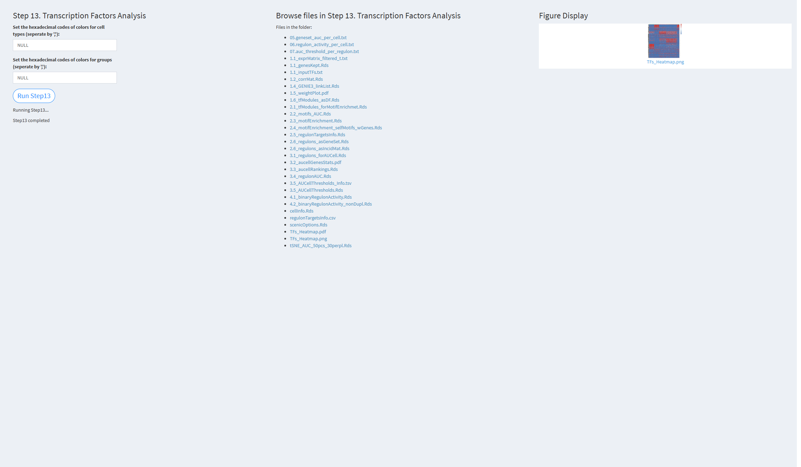
Set the hexadecimal codes of colors for cell types: Colors used for visualizing cell types. Default value: NULL (color palette).
Set the hexadecimal codes of colors for groups: Colors used for visualizing groups. Default value: NULL (color palette).
Click the “Run Step 13” button to start the process. After clicking the “Run Step 13” button, please do not interact with other parameters or buttons on the page. Once the process is complete, a “Step 13 completed” message will appear.
After a short while, the result files generated by Step 13 will be displayed on the UI page. The result files are stored in the folder specified by the user’s output.dir parameter.
7.2.3.1.14 Step 14 (scRNA-seq pipeline). Cell-Cell Interaction
- The figure showing the step 14 of scRNA-seq pipeline. 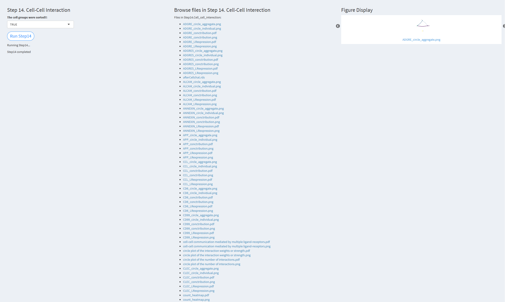
The cell groups were sorted: Whether to consider the size (number) of cell groups in the cell communication analysis. Default value: TRUE.
Click the “Run Step 14” button to start the process. After clicking the “Run Step 14” button, please do not interact with other parameters or buttons on the page. Once the process is complete, a “Step 14 completed” message will appear.
After a short while, the result files generated by Step 14 will be displayed on the UI page. The result files are stored in the folder specified by the user’s output.dir parameter.
7.2.3.2 ST-pipeline
When the user clicks the button “Start ST-seq pipeline–Begin New Analysis,” they will be taken to the empty analysis page. The page sidebar includes the following buttons:
Please start the analysis from Step 1 and do not skip any steps. The correct analysis sequence is Step 1, 2, 3, 4, 5, 6, 7, 8, 9, 10, and 11.
To return to the previous page, please click “Back to Prior Page.”
Step 1. Input Data Step 2. Quality Control Step 3. Clustering Step 4. Find Differential Genes Step 5. Spatially Variable Features Step 6. Spatial Interaction Step 7. CNV Analysis Step 8. Deconvolution Step 9. Cell Cycle Analysis Step 10. Niche Analysis Step 11. Generate the Report Back to Prior Page
In “Begin New Analysis,” users start analyzing data from Step1. If Shiny unexpectedly exits during the analysis process (for example, if you are analyzing Step5 and Shiny crashes, causing Step5 to fail), users need to restart Shiny by running shinyApp(ui, server). This will bring up the Home page. Users should click the “Start ST-seq pipeline–Continue Previous Analysis” button. They need to enter the JobID displayed in the UI page during the Step1.Input data step and then select the step that did not complete successfully to continue the analysis. For example, if Step5 failed, select Step5, enter the necessary parameters, and click “Run Step5” to continue the analysis. After Step5 finishes, select Step6, enter the parameters for Step6, and click “Run Step6” to analyze Step6, and so on for all subsequent steps.
Please note that the default parameters for each step are the same as those in “Begin New Analysis.” After clicking “Run Step,” do not make any other changes to the parameter page. Wait until the current step completes, and the results file for the current step will appear on the UI page.
The “Start ST-seq pipeline–Continue Previous Analysis” page includes the following buttons:
Back to Prior Page: Click to return to the previous page. Enter your Job ID: Enter the JobID displayed in the “Begin New Analysis–Step1.Input data” step. Choose a step you want to analyze: Select the step you want to continue analyzing.
7.2.3.2.1 Step 1 (st-seq pipeline). Input Data
- The figure showing the step 1 of st-seq pipeline.
Enter data path: The directory where the input data is stored. The input data should be 10X Visium spatial transcriptomics data. Only one dataset can be input at a time; unlike single-cell data, multiple datasets cannot be entered simultaneously.
Enter sample name: A string for naming the sample. The default value is ‘Hema_ST’.
Enter output path: The directory where processed outputs will be saved. For example: /home/username/output.
Enter the path of Python: The path to the Python executable, as that in scRNA-seq pipeline.
After entering the parameters above, click the “LoadData” button to load the data. Once the data is loaded, the system will provide a JobID, which should be noted. If Shiny unexpectedly exits, you can click “Continue Previous Analysis” and enter the JobID to resume loading the previous analysis results, avoiding the need to restart from Step 1. The JobID is very important!
Please note: After clicking the “LoadData” button, do not make further changes to other parameters on the page.
The Step 2-10 pages will have three sections:
Parameter input Result output file names Generated result plots If a step generates result plots, they will be displayed. Users can switch between images by clicking the arrows on either side of the plot. If no result plots are generated for the current step, users will be informed with “NO Figure!”
The result files generated for each step are stored in the output path specified by the user. The UI page will only display the file names, and clicking on the file name links will allow downloading the files.
7.2.3.2.2 Step 2 (st-seq pipeline). Quality Control
- The figure showing the step 2 of st-seq pipeline.
min.gene (default: 200): Specifies the minimum number of genes detected in a spot. The default value is 200.
min.nUMI (default: 500): Specifies the minimum number of nUMIs detected in a spot. The default value is 500.
max.gene (default: Inf): Specifies the maximum number of genes detected in a spot. The default value is Inf (no upper limit).
max.nUMI (default: Inf): Specifies the maximum number of nUMIs detected in a spot. The default value is Inf (no upper limit).
min.spot (default: 0): Specifies the minimum number of spots where each gene is expressed.
bool.remove.mito: Whether to remove mitochondrial genes. The default value is TRUE.
species: Specifies the species: human/mouse.
Click “Run Step2” to proceed. After clicking the “Run Step2” button, please do not modify any other parameters on the page. Once Step 2 is completed, the result files will appear in the UI, and they will be stored in the folder specified by the user in the output.dir parameter.
7.2.3.2.3 Step 3 (st-seq pipeline). Clustering
- The figure showing the step 3 of st-seq pipeline.
normalization.method (default: ‘SCTransform’): The method for data normalization. The default value is ‘SCTransform’.
npcs (default: 50): The number of principal components (PCs) to use in PCA. The default value is 50.
pcs.used (default: 1:10): The number of PCs used for clustering analysis. The default value is the first 10 PCs (1:10).
resolution (default: 0.8): The resolution parameter for the clustering algorithm. The default value is 0.8.
Click “Run Step3” to proceed. After clicking the “Run Step3” button, please do not modify any other parameters on the page. Once Step 3 is completed, the result files will appear in the UI, and they will be stored in the folder specified by the user in the output.dir parameter.
7.2.3.2.4 Step 4 (st-seq pipeline). Find Differential Genes
- The figure showing the step 4 of st-seq pipeline.

only.pos: A logical flag to include only positive markers. The default value is TRUE.
min.pct (default: 0.25): The minimum fraction of cells expressing the gene in any cluster. The default value is 0.25.
logfc.threshold (default: 0.25): The log-fold change threshold for considering differentially expressed genes. The default value is 0.25.
test.use (default: ‘wilcox’): The statistical test used for differential expression analysis. The default value is ‘wilcox’.
Click “Run Step4” to proceed. After clicking the “Run Step4” button, please do not modify any other parameters on the page. Once Step 4 is completed, the result files will appear in the UI, and they will be stored in the folder specified by the user in the output.dir parameter.
7.2.3.2.5 Step 5 (st-seq pipeline). Spatially variable features
- The figure showing the step 5 of st-seq pipeline. 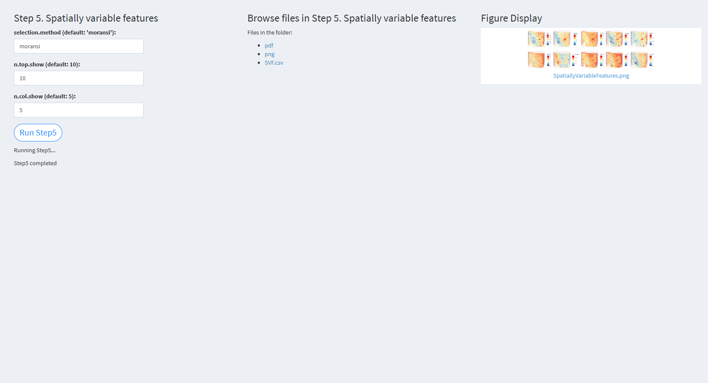
selection.method (default: ‘moransi’): The method used for selecting spatially variable features. The default value is ‘moransi’.
n.top.show (default: 10): The number of top spatially variable features to visualize. The default value is 10.
n.col.show (default: 5): The number of columns in the visualization grid. The default value is 5.
Click “Run Step5” to proceed. After clicking the “Run Step5” button, please do not modify any other parameters on the page. Once Step 5 is completed, the result files will appear in the UI, and they will be stored in the folder specified by the user in the output.dir parameter.
7.2.3.2.6 Step 6 (st-seq pipeline). Spatial interaction
- The figure showing the step 6 of st-seq pipeline.

commot.signaling_type (default: ‘Secreted Signaling’): The type of signaling interaction to consider. The default value is ‘Secreted Signaling’.
commot.database (default: ‘CellChat’): The database used for the analysis. The default value is ‘CellChat’.
commot.min_cell_pct (default: 0.05): The minimum cell percentage to consider in interaction analysis. The default value is 0.05.
commot.dis_thr (default: 500): The distance threshold used to define interactions. The default value is 500.
commot.n_permutations (default: 100): The number of permutations used to assess significance. The default value is 100.
Click “Run Step6” to proceed. After clicking the “Run Step6” button, please do not modify any other parameters on the page. Once Step 6 is completed, the result files will appear in the UI, and they will be stored in the folder specified by the user in the output.dir parameter.
7.2.3.2.7 Step 7 (st-seq pipeline). CNV analysis
- The figure showing the step 7 of st-seq pipeline. 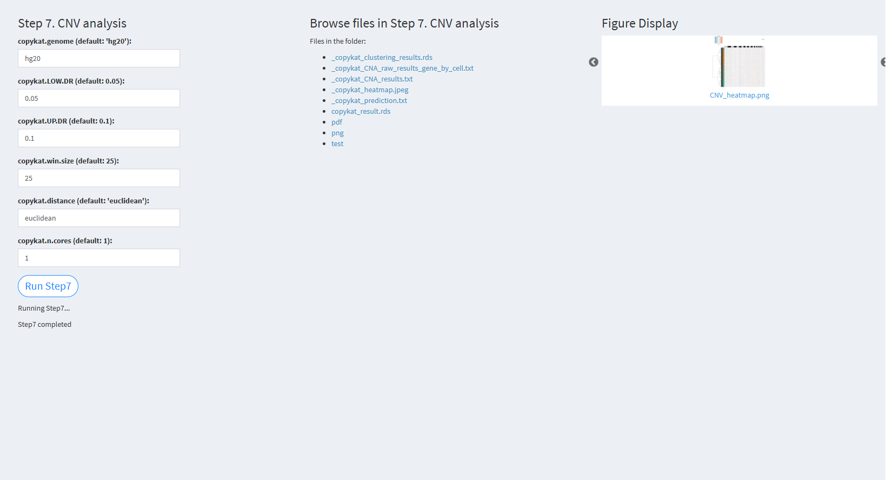
copykat.genome (default: ‘NULL’): The genome version used, either ‘hg20’ or ‘mm10’. The default value is “hg20”.
copykat.LOW.DR (default: 0.05): The lower dropout rate threshold in CopyKAT. The default value is 0.05.
copykat.UP.DR (default: 0.1): The upper dropout rate threshold in CopyKAT. The default value is 0.1.
copykat.win.size (default: 25): The window size for CNV analysis. The default value is 25.
copykat.distance (default: ‘euclidean’): The distance metric used for analysis. The default value is “euclidean”.
copykat.n.cores (default: 1): The number of cores used for parallel processing. The default value is 1.
Click “Run Step7” to proceed. After clicking the “Run Step7” button, please do not modify any other parameters on the page. Once Step 7 is completed, the result files will appear in the UI, and they will be stored in the folder specified by the user in the output.dir parameter.
7.2.3.2.8 Step 8 (st-seq pipeline). Deconvolution
- The figure showing the step 8 of st-seq pipeline.
cell2loc.sc.h5ad.dir (default: ‘NULL’): The path to the h5ad format single-cell RNA-seq data. The default value is NULL.
cell2loc.sc.max.epoch (default: 1000): The maximum number of epochs for single-cell deconvolution. The default value is 1000.
cell2loc.st.max.epoch (default: 10000): The maximum number of epochs for spatial deconvolution. The default value is 10000.
cell2loc.use.gpu (default: FALSE): A logical value indicating whether to use GPU for computation. The default value is FALSE.
Click “Run Step8” to proceed. After clicking the “Run Step8” button, please do not modify any other parameters on the page. Once Step 8 is completed, the result files will appear in the UI and will be stored in the folder specified by the user in the output.dir parameter.
7.2.3.2.9 Step 9 (st-seq pipeline). Cell cycle analysis
- The figure showing the step 9 of st-seq pipeline.
The gene sets for calculating S phase scores (e.g. “gene1,gene2,gene3”): A list of genes associated with the S phase. The default value is NULL (uses genes from Seurat).
The gene sets for calculating G2M phase scores (e.g. “gene1,gene2,gene3”): A list of genes associated with the G2M phase. The default value is NULL (uses genes from Seurat).
Click “Run Step9” to proceed. After clicking the “Run Step9” button, please do not modify any other parameters on the page. Once Step 9 is completed, the result files will appear in the UI and will be stored in the folder specified by the user in the output.dir parameter.
7.2.3.2.10 Step 10 (st-seq pipeline). Niche analysis
- The figure showing the step 10 of st-seq pipeline.
Nich.cluster.n (default: 4): The number of clusters for niche clustering. The default value is 4.
Click “Run Step10” to proceed. After clicking the “Run Step10” button, please do not modify any other parameters on the page. Once Step 10 is completed, the result files will appear in the UI and will be stored in the folder specified by the user in the output.dir parameter.